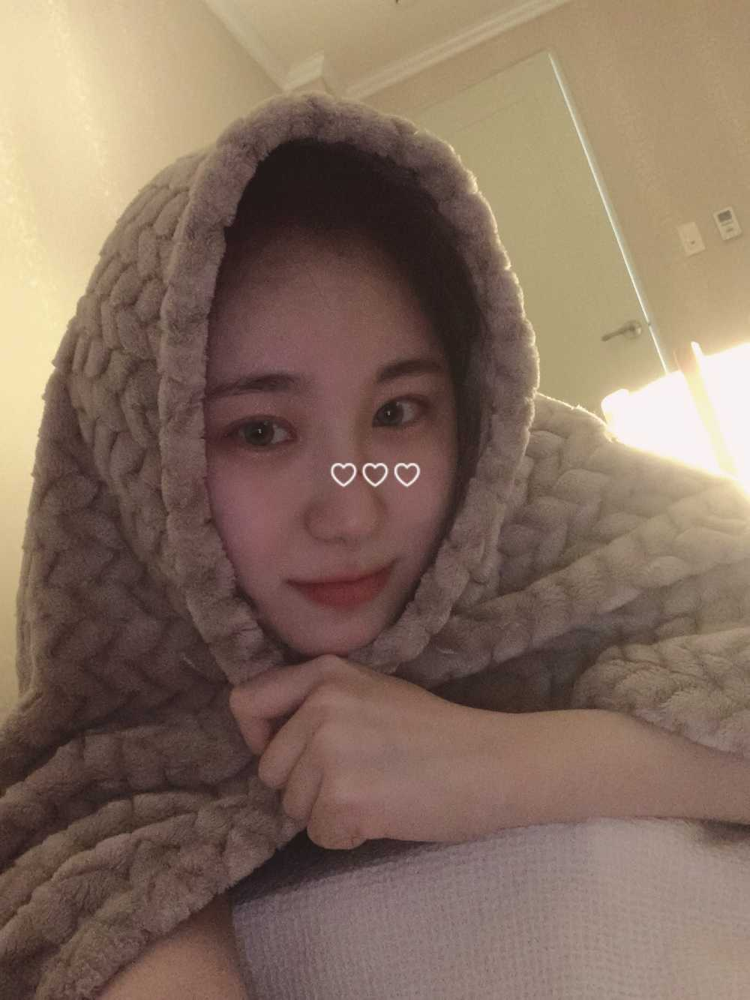

게스트 방에 있는 침대
하나
굿즈 방에 있는 침대
하나
총 두 개 침대를 숙소로 보냈어요=33 푸쓩
방에 침대가 없어요 ㅋㅋㅋㅋㅋ🤣ㅋㅋㅋㅋㅋㅋㅋㅋㅋㅋㅋ
원래는 엄마 침대에서 같이 자려구 그랬는뎅
애기들이 자기들 자리라고
두 명이서 대(大)자로 뻗어가지구
옷장에서
애기들 침대 꺼냈답니다..
언제 프메로 한 번 자기 침대에 있는 애기 사진 보낸 적 있는데.. 언제일까...
아무튼
애기들 침대 두 개 이어서 ㅋㅋㅋㅋㅋ
매트를 만들었어요
실제로 보면 진짜 웃길 걸요?

사실 콧등 살짝 가리려구 스티커 붙였는데
감쪽같네~~~
얼굴 각질 제거 하다가
앙증맞게 콧등 위에 앉아있던 뾰루지씨를
제가 건드려버렸어요...
잠자는 사자의 콧털을 건드린 셈
잠깐 코털이 맞나... 콧물은 코물이라고 안하잖아
😅
아
.
.
.
.
아... 전 사실..
미리 굿나잇 인사를 전하려
왔는데 또 말이 길어져버렸어요 ㅎㅎ
밤인사를 슬쩍 자연스럽게 건네보겠습니다..🙃
Good Night
おやすみー
잘자요 🌙
우리 날개들❤️
*날개 = 저의 꿈에 날개를 달아주시는 마법사들이니까
애칭으로 부르고 싶어서 제 맘대로 이렇게 부르고 있어요 ㅎㅎ 미안😉
WIZ*ONE = 마법사 = 날개 = My Wings = 사랑❣️